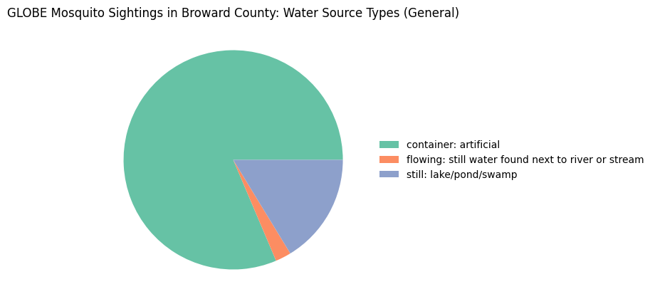
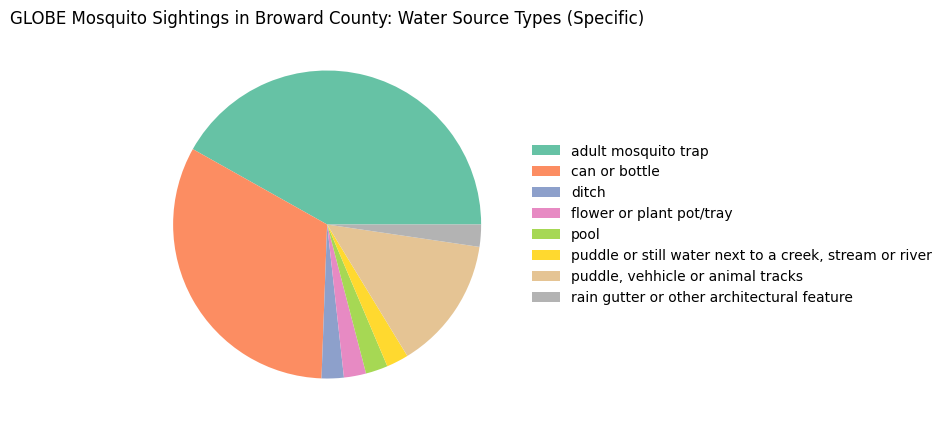

Summary Statistics by County#
Write the name of your county in the quotes below. For example, county = "Broward County" or county = "Miami-Dade County"
county_name = "Broward County"
import geopandas as gpd
import pandas as pd
pd.set_option("display.max_columns", None)
import matplotlib.pyplot as plt
import seaborn as sns
First, load 1) the GLOBE Mosquito Habitat Mapper data, and 2) a file with the Florida county boundaries from the U.S. Census, which will be used to filter the data to each county.
data = gpd.read_file('https://github.com/geo-di-lab/emerge-lessons/raw/refs/heads/main/docs/data/globe_mosquito.zip')
fl = gpd.read_file('https://github.com/geo-di-lab/emerge-lessons/raw/refs/heads/main/docs/data/florida_counties.geojson')
Then, get the geographic boundaries of your county.
county = fl.loc[fl['NAMELSAD'] == county_name]
Now, we use those boundaries to filter for all GLOBE points within your county, from 2018 tp 2024.
data_county = data.sjoin(county, how="inner", predicate="within")
num_total = len(data_county)
print(f"There were {num_total} GLOBE points recorded within {county_name} from 2018-2024 by community scientists.")
num_eliminated = len(data_county[data_county['BreedingGroundEliminated'] == 'true'])
print(f"Of those points, {num_eliminated} ({round(num_eliminated * 100 / num_total)}%) were successfully mitigated by the community scientists, which reduces the risk for mosquitoes at that location in the future.")
There were 43 GLOBE points recorded within Broward County from 2018-2024 by community scientists.
Of those points, 26 (60%) were successfully mitigated by the community scientists, which reduces the risk for mosquitoes at that location in the future.
data_county.head()
| CountryCode | CountryName | Elevation | AbdomenCloseupPhotoUrls | BreedingGroundEliminated | Comments | DataSource | ExtraData | Genus | GlobeTeams | LarvaFullBodyPhotoUrls | LarvaeCount | LastIdentifyStage | LocationAccuracyM | LocationMethod | MeasuredAt | MeasurementElevation | MeasurementLatitude | MeasurementLongitude | MosquitoAdults | MosquitoEggs | MosquitoHabitatMapperId | MosquitoPupae | Species | Userid | WaterSource | WaterSourcePhotoUrls | WaterSourceType | OrganizationId | OrganizationName | Protocol | SiteId | SiteName | MeasuredDate | LarvaeCountProcessed | geometry | index_right | STATEFP | COUNTYFP | COUNTYNS | GEOIDFQ | GEOID | NAME | NAMELSAD | STUSPS | STATE_NAME | LSAD | ALAND | AWATER | |
|---|---|---|---|---|---|---|---|---|---|---|---|---|---|---|---|---|---|---|---|---|---|---|---|---|---|---|---|---|---|---|---|---|---|---|---|---|---|---|---|---|---|---|---|---|---|---|---|---|---|
| 6640 | USA | United States | -0.4 | None | true | When I went kayaking I saw sum in like the tre... | GLOBE Observer App | LarvaeVisibleNo | None | [WileyCollegeBIOL1422] | None | 0 | None | 5 | automatic | 2023-03-30 02:01:00 | 0 | 26.1638 | -80.1253 | None | None | 42851 | false | None | 103027879 | puddle or still water next to a creek, stream ... | https://data.globe.gov/system/photos/2023/03/3... | flowing: still water found next to river or st... | 17043304 | United States of America Citizen Science | mosquito_habitat_mapper | 314904 | 17RNJ874941 | 2023-03-30 | 0.0 | POINT (-80.12548 26.16364) | 57 | 12 | 011 | 00295753 | 0500000US12011 | 12011 | Broward | Broward County | FL | Florida | 06 | 3115495915 | 273317277 |
| 28671 | USA | United States | 4.7 | None | false | None | GLOBE Observer App | None | None | [SEES2019] | None | 0 | identify | None | None | 2019-08-24 11:27:00 | 0 | 26.3255 | -80.1897 | false | false | 15439 | false | None | 57838002 | puddle, vehhicle or animal tracks | https://data.globe.gov/system/photos/2019/08/2... | still: lake/pond/swamp | 17043304 | United States of America Citizen Science | mosquito_habitat_mapper | 160462 | 17RNK808119 | 2019-08-24 | 0.0 | POINT (-80.1904 26.32473) | 57 | 12 | 011 | 00295753 | 0500000US12011 | 12011 | Broward | Broward County | FL | Florida | 06 | 3115495915 | 273317277 |
| 29021 | USA | United States | 4.7 | None | false | None | GLOBE Observer App | None | None | [SEES2019] | None | None | identify | None | None | 2019-08-14 19:06:00 | 0 | 26.3255 | -80.1897 | None | None | 15169 | false | None | 57838002 | puddle, vehhicle or animal tracks | https://data.globe.gov/system/photos/2019/08/1... | still: lake/pond/swamp | 17043304 | United States of America Citizen Science | mosquito_habitat_mapper | 160462 | 17RNK808119 | 2019-08-14 | NaN | POINT (-80.1904 26.32473) | 57 | 12 | 011 | 00295753 | 0500000US12011 | 12011 | Broward | Broward County | FL | Florida | 06 | 3115495915 | 273317277 |
| 29392 | USA | United States | 4.7 | None | false | None | GLOBE Observer App | None | None | [SEES2019] | None | None | identify | None | None | 2019-08-04 16:29:00 | 0 | 26.3257 | -80.1900 | None | None | 14785 | false | None | 57838002 | adult mosquito trap | https://data.globe.gov/system/photos/2019/08/0... | container: artificial | 17043304 | United States of America Citizen Science | mosquito_habitat_mapper | 160293 | 17RNK808120 | 2019-08-04 | NaN | POINT (-80.1904 26.32564) | 57 | 12 | 011 | 00295753 | 0500000US12011 | 12011 | Broward | Broward County | FL | Florida | 06 | 3115495915 | 273317277 |
| 29406 | USA | United States | 4.7 | None | false | None | GLOBE Observer App | None | None | [SEES2019] | None | None | identify | None | None | 2019-08-04 16:28:00 | 0 | 26.3254 | -80.1899 | None | None | 14783 | false | None | 57838002 | adult mosquito trap | https://data.globe.gov/system/photos/2019/08/0... | container: artificial | 17043304 | United States of America Citizen Science | mosquito_habitat_mapper | 160462 | 17RNK808119 | 2019-08-04 | NaN | POINT (-80.1904 26.32473) | 57 | 12 | 011 | 00295753 | 0500000US12011 | 12011 | Broward | Broward County | FL | Florida | 06 | 3115495915 | 273317277 |
# Add a new column for year
data_county['MeasuredYear'] = data_county['MeasuredAt'].dt.year
# Make histogram of mosquito sightings each year
years = data_county[['SiteId', 'MeasuredYear']].groupby('MeasuredYear', as_index=False).count()
plt.bar(years['MeasuredYear'], years['SiteId'])
plt.title("Mosquito Sightings by Year", loc = 'left')
plt.title(county_name, loc = 'right')
plt.show()
Let’s make a pie chart of the water source types (both general and specific) where mosquitoes were reported in this county.
types = data_county[['SiteId', 'WaterSourceType']].groupby('WaterSourceType', as_index=False).count()
plt.figure(figsize=(5, 5))
patches, texts = plt.pie(x = types['SiteId'],
colors = sns.color_palette('Set2'))
plt.title(f"GLOBE Mosquito Sightings in {county_name}: Water Source Types (General)")
plt.legend(patches, types['WaterSourceType'],
loc = 'center left', bbox_to_anchor=(1, 0.5), frameon=False)
plt.show()

types = data_county[['SiteId', 'WaterSource']].groupby('WaterSource', as_index=False).count()
plt.figure(figsize=(5, 5))
patches, texts = plt.pie(x = types['SiteId'],
colors = sns.color_palette('Set2'))
plt.title(f"GLOBE Mosquito Sightings in {county_name}: Water Source Types (Specific)")
plt.legend(patches, types['WaterSource'],
loc = 'center left', bbox_to_anchor=(1, 0.5), frameon=False)
plt.show()
